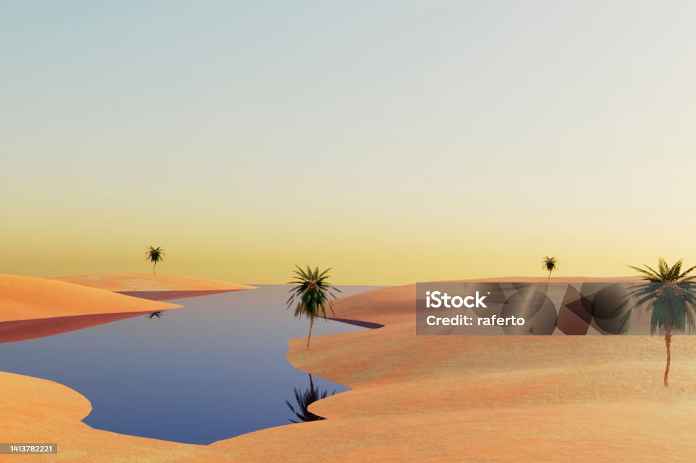
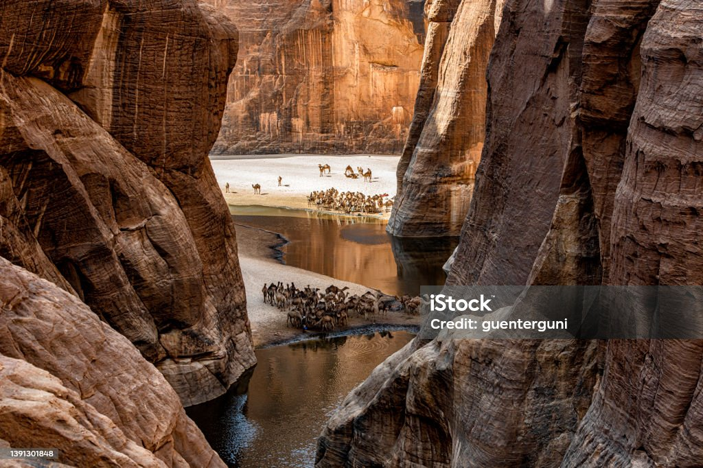
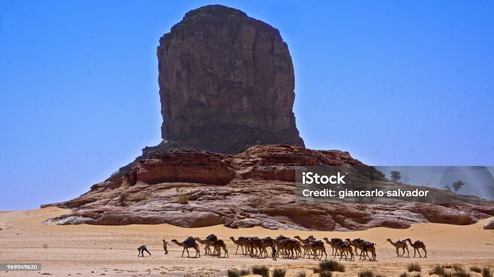
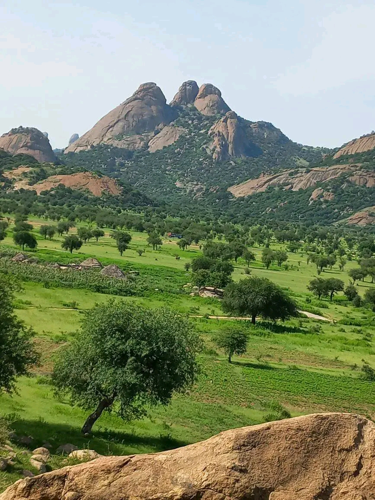
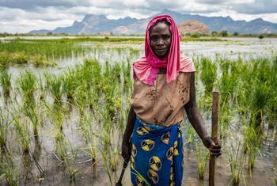

Le Tchad est un pays d'Afrique centrale, enclavé et aux paysages contrastés. Situé au cœur du continent africain, il partage des frontières avec la Libye au nord, le Soudan à l'est, la République centrafricaine au sud et le Niger, le Nigeria et le Cameroun à l'ouest.Le Tchad se caractérise par une grande diversité géographique, allant des déserts du Sahara au nord aux savanes verdoyantes du sud. Le lac Tchad, l'un des plus grands lacs d'Afrique, occupe une place centrale dans la vie économique et sociale du pays.
Les montagnes du Tchad offrent des paysages spectaculaires et des opportunités.
Le territoire national se divise en trois grandes régions géographiques distinctes : le Nord, le
Centre et le Sud. Chacune de ces régions possède ses propres caractéristiques physiques,
économiques et culturelles qui en font des entités uniques.
Le Nord se distingue par son relief montagneux, son climat plus froid et ses activités
économiques axées sur l'industrie et l'exploitation des ressources naturelles. La région du
Centre est marquée par ses plaines fertiles, son agriculture prospère et son dynamisme
économique. Quant au Sud, il se caractérise par son climat méditerranéen, son littoral et ses
activités touristiques et viticoles.
Le désert du Sahara couvre une grande partie du Tchad, offrant des vues à couper le
souffle et une expérience de voyage inoubliable.
Le Tchad possède une vaste étendue de déserts et de montagnes qui ont longtemps fasciné
les explorateurs. Ces régions reculées et inhospitalières ont été progressivement découvertes
et cartographiées à partir du 19ème siècle.
L'exploration du désert tchadien a permis de mieux connaître cette région aride et hostile,
marquée par un climat extrême, des paysages de dunes et de roches, ainsi que la présence de
populations nomades comme les Toubous. Des expéditions ont notamment permis de localiser
des oasis, des points d'eau et des routes caravanières essentiels pour la survie dans ces
contrées.
Quant aux montagnes du Tchad, elles se caractérisent par des massifs escarpés comme le
Tibesti et l'Ennedi, qui culminent à plus de 3 000 mètres d'altitude. L'exploration de ces reliefs
accidentés a révélé une faune et une flore uniques, ainsi que des sites archéologiques
témoignant d'une occupation humaine ancienne.
L'importance de ces régions désertiques et montagneuses réside dans leur richesse naturelle et
culturelle. Elles abritent une biodiversité fragile qu'il faut préserver. Elles constituent aussi un
patrimoine géologique et archéologique précieux pour la connaissance de l'histoire de la région.
Enfin, elles jouent un rôle économique pour les populations locales pratiquant l'élevage nomade
et le commerce caravanier.

La savane du Tchad abrite une biodiversité incroyable, des plaines vastes et des
paysages pittoresques.
Les Monts Guéra situés au centre du Tchad,les Monts Guéra forment un massif montagneux de moyenne altitude.Ils jouent un role essentiel dans la régulation des précipitations et l'approvisionnement en eau douce de la région.Ces montagnes offrent des paturages et des terres cultivables qui soutiènnent les activités agro-pastorales.Elles abritent également des sites archéologiques et traditions culturelles ancestrales.Ces différents massifs montagneux du centre du Tchad façonnent le paysage,influent le climat,préservent la biodiversité et soutiènnent les activités économiques et culturelles des populations locales.Ils représentent donc un patrimoine naturel et culturel essentiel pour le pays.


La savane Tchadienne possède une diversité encroyable des animaux je vous invite a visiter le beau paysage du Tchad
La savanne Tchadienne est une vaste étendue de végétation herbacée et arbustive qui s'étend sur une grande partie du Tchad.Ce biome est caractérisé par un climat tropical semi-aride avec une saison des pluies et une saison sèche bien marquées.
La savanne Tchadienne joue un role essentiel dans l'écosystème de la région:
Resources naturelles : La savane fournit de nombreuses resources naturelles aux populations locales,notamment du bois de chauffe,du fourrage pour les bétails,des plantes médicinales et des fruits sauvages .
Biodiversité:La savane abrite une riche biodiversité,avec de nombreuses espèces animales et vegetales uniques.C'est un habitat essentiel pour la faune sauvage.
Tourisme: Les paysages de la savane Tchadinne offrent un potentiel touristiques important,avec la possibilité d'observer la faune et la flore dans un cadre naturel préservé.
Régulation climatique:La savane joue un role important dans la régulation du climat local et régional,en absorbant le carbone et en influençant les précipitations.
Ainsi,la savane Tchadienne constitue une resource naturelle précieuse pour le Tchad,offrant des service écosystémiques essentiels sur le plans économique,envirnnomental et social.
Le parc national de Zakouma est l'une des plus importantes aires protégées du Tchad, située
dans la région du Salamat au sud-est du pays. Créé en 1963, ce parc s'étend sur près de 3 000
km² de savanes boisées, de forêts galeries et de zones humides.
Zakouma abrite une faune exceptionnelle, notamment de grands mammifères comme les
éléphants, les lions, les guépards, les girafes et les antilopes. C'est l'un des derniers refugespour la population d'éléphants d'Afrique centrale, qui a malheureusement beaucoup souffert du
braconnage par le passé.
Au-delà de sa richesse faunistique, le parc de Zakouma revêt une importance capitale pour le
Tchad. Il joue un rôle essentiel dans la préservation de la biodiversité du pays, en protégeant
des espèces menacées. Il contribue également au développement économique local grâce à
l'écotourisme, source de revenus et d'emplois pour les communautés riveraines.
Sur le plan environnemental, Zakouma participe à la régulation des cycles de l'eau et du
carbone, en tant qu'écosystème forestier et humide. Il représente aussi un patrimoine naturel et
culturel majeur pour le Tchad, témoignant de la beauté et de la fragilité des paysages africains.

Le champ d'arachide a Moundou
La région sud du Tchad bénéficie d'un climat tropical favorable à l'agriculture. Parmi les principales cultures de cette zone, on retrouve le riz et l'arachide, qui jouent un rôle économique et social majeur. La culture du riz est particulièrement développée dans les zones inondables le long du fleuve Chari. Cette production rizicole permet d'assurer une partie de la sécurité alimentaire locale et nationale. Le riz du sud du Tchad est notamment consommé dans les grands centres urbains du pays. L'arachide est également une culture de rente très importante dans le sud tchadien. Les zones sablonneuses de cette région sont propices à la production d'arachide, qui est ensuite transformée et commercialisée, tant sur les marchés locaux qu'à l'export. Les revenus générés par la vente d'arachide constituent une source de revenus essentielle pour de nombreuses familles rurales. Au-delà de leur importance économique, la culture du riz et de l'arachide sont aussi ancrées dans la tradition et l'identité culturelle des populations du sud du Tchad. Elles font partie intégrante des habitudes alimentaires et des pratiques agricoles ancestrales de cette région. Ainsi, le riz et l'arachide représentent des piliers économiques et culturels majeurs pour le sud du Tchad. Leur production contribue à la sécurité alimentaire, aux reven
Le Tchad est un vaste pays d'Afrique centrale, divisé en trois grandes régions géographiques distinctes : le nord, le centre et le sud. La région nord du Tchad est dominée par le désert du Sahara. Le climat y est aride, avec de faibles précipitations annuelles. Cette zone abrite des paysages désertiques, avec des dunes de sable, des oueds asséchés et des oasis dispersées. En allant vers le centre du pays, on entre dans la zone de la savane soudanienne. Le climat y est plus clément, avec une saison des pluies plus marquée. Les paysages sont constitués de vastes étendues herbeusesponctuées d'arbres épars. L'agriculture pluviale (mil, sorgho) et l'élevage bovin y sont les principales activités économiques. Enfin, la région sud du Tchad bénéficie d'un climat tropical humide, favorable à une végétation de type forêt-savane. Cette zone est traversée par le fleuve Chari et ses affluents, offrant des terres propices à la riziculture et à la culture de l'arachide. L'élevage bovin y est également très développé. Malgré ces différences géographiques et climatiques, l'ensemble du Tchad partage une riche diversité culturelle, avec de nombreuses traditions, langues et religions coexistant sur le territoire national